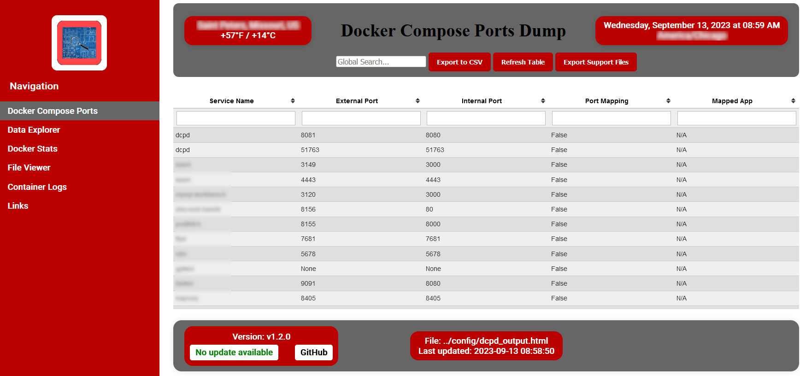

This script parses a docker-compose.yml file(s) and dumps all assigned ports into a table and displays them in a terminal. It defaults to sort by the order services are defined in docker-compose.yml. It also has options to sort by external ports or by container names. If you have containers that are attached to a VPN container, you can also have those mapped as well.
It can also generate a web page. The web page must be run from a web server and viewed via http ot https as it includes JavaScript. The web page also contains view of all services mapped to host networking as well as the info and debug logs.
The script does not change the existing file and only needs read access to your docker-compose.yml file.
This was developed on Ubuntu 22.04 running Python 3.10.6. Use at your own risk. This comes with no warranty or guarantees.
cat /dev/urandom | tr -dc 'a-zA-Z0-9' | head -c 24 ; echo
dcpd:
hostname: dcpd
image: ghcr.io/samcro1967/docker_compose_ports_dump:latest
container_name: dcpd
environment:
- TZ=${TZ}
- PUID=1000
- PGID=1000
- CRON_SCHEDULE=*/15 * * * *
- DOCKER_COMPOSE_FILE_PATHS="/compose-files/docker-compose.yml,/app/compose-files/docker-compose_test.yml"
- DEFAULT_VPN_CONTAINER_NAME=your_vpn_container_name #Optional
- DEFAULT_DCPD_USERNAME=your_user_name #Optional
- DEFAULT_DCPD_PASSWORD=your_user_password #Optional
- REDACTED_ZIP_FILE_PASSWORD=P@55w0rd #Optional
- API_KEY=your_random_api_key
ports:
- "80:80"
- "81:81"
volumes:
# root of folder where all docker compose folder reside
- /path/to/compose/files:/compose-files
healthcheck:
test: /app/healthcheck.sh
interval: 60s
timeout: 10s
retries: 3
start_period: 10s
docker run \
--hostname dcpd \
--name dcpd \
-e TZ=${TZ} \
-e PUID=1000 \
-e PGID=1000 \
-e CRON_SCHEDULE='*/15 * * * *' \
-e DOCKER_COMPOSE_FILE_PATHS="/compose-files/docker-compose.yml,/compose-files/docker-compose_test.yml" \
-e DEFAULT_VPN_CONTAINER_NAME=your_vpn_container_name \
-e DEFAULT_DCPD_USERNAME=your_user_name \
-e DEFAULT_DCPD_PASSWORD=your_user_password \
-e REDACTED_ZIP_FILE_PASSWORD=P@55w0rd \
-e API_KEY=your_random_api_key \
-p 80:80 \
-p 81:81 \
-v /path/to/compose/files:/compose-files \
--health-cmd="/app/healthcheck.sh" \
--health-interval=60s \
--health-timeout=10s \
--health-retries=3 \
--health-start-period=10s \
ghcr.io/samcro1967/docker_compose_ports_dump:latest
Launch your browser and go to http://ipaddress:80/dcpd
If you did not change the user name and password, here are the defaults:
Default user name: dcpd_admin
Default user password: P@55w0rd
docker exec -it dcpd bash -c 'cd /app/src && ./dcpd.py -h'
docker exec -it dcpd bash -c 'cd /app/src && ./dcpd.py -s'
docker exec -it dcpd bash -c 'cd /app/src && ./dcpd.py'
docker exec -it dcpd bash -c 'cd /app/src && ./dcpd.py -o'
Launch your browser and go to http://ipaddress:80/dcpd
Default user name: dcpd_admin
Default user password: P@55w0rd

Legend
This project is licensed under the terms of the MIT license. See the LICENSE file for details.
This project makes use of the following third-party software:
Caddy: An open-source web server with automatic HTTPS. Licensed under the Apache 2.0 License. More information can be found at the Caddy Official Website or the Caddy GitHub Repository.
jQuery: A fast, small, and feature-rich JavaScript library. Licensed under the MIT License. More information and source code can be found on the jQuery Official Website.
jquery.tablesorter: A jQuery plugin for turning a standard HTML table with THEAD and TBODY tags into a sortable table without refreshing the page. Licensed under the MIT License. More details and source code are available at the jquery.tablesorter GitHub Repository.
delete-untagged-ghcr-action: This action deletes untagged images from the GitHub Container Registry. Used under MIT License (link to the license might change based on the repository structure). More details and source code are available at the delete-untagged-ghcr-action GitHub Repository.